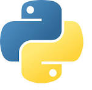

Projets Informatiques
Lycée
Vous trouverez ici l'ensemble des projets informatiques fais au lycée.
Les langages apris sont :
- Python
- HTML et CSS
- SQL
Première année BUT Informatique
Au cours de la première année du BUT, plusieurs langages de programmation ont été vus et apris.
Vous trouverez ci-dessous une liste des différents langage avec, s'il y a, le projet informatique lui étant lié.
Python
Web
Linux / Bash
SQL
Java
C
PostGre SQL

Démineur
Chronomètre
LOREM ISPUM web
LOREM ISPUM Linux

Création de la BDD
Exercices liés à la BDD
BDD principale
Insertion des données
Insertion des données vers la BDD principale
LOREM ISPUM java
LOREM ISPUM c
LOREM ISPUM PGsql